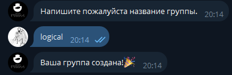
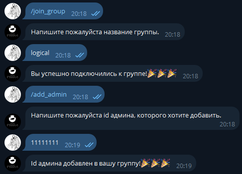
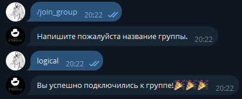
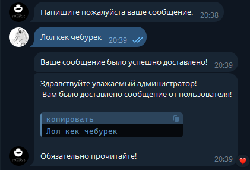
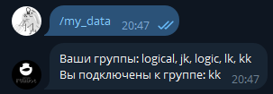
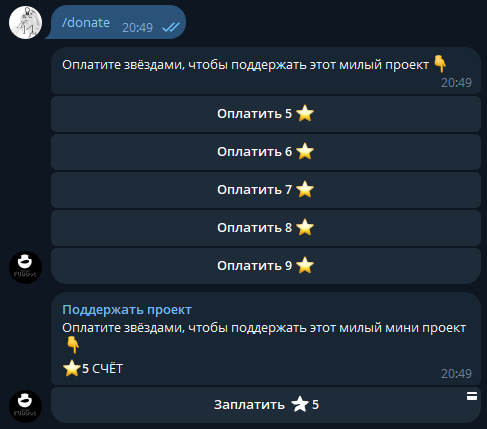
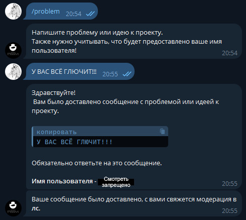

Комманды
1. /create_group - используйте, чтобы создать группу для своего телеграмм канала.

2. /add_admin - используйте, чтобы добавить админа в свою группу телеграмм канала(все id админов выдуманные).

3. /join_group - используйте, чтобы присоединиться к группе телеграмм канала.

4. /send_message - используйте, чтобы отправить сообщение администраторам группы(работает, только когда вы в группе).

5. /my_data - используйте, чтобы узнать о себе данные.

6. /donate - используйте, чтобы поддержать проект(при поддержке от нас будет выдан маленький сюрприз🎁).

7. /problem - используйте, чтобы связаться с нами.
ВНИМАНИЕ: Модерции будет предоставлено ваше имя пользователя!
